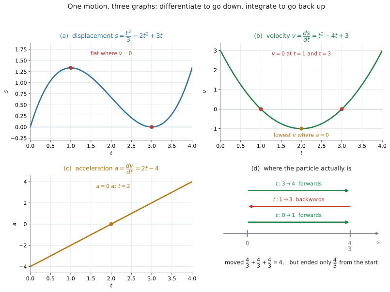
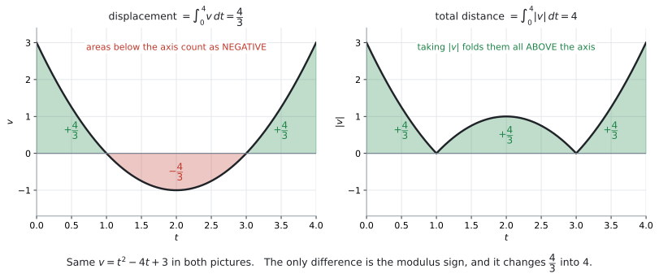

AHL 5.13 — Kinematics（運動の記述）
- displacement（変位）\(s\)、velocity（速度）\(v\)、acceleration（加速度）\(a\) の関係を説明できる。
- \(v = \dfrac{ds}{dt}\)、\(a = \dfrac{dv}{dt} = \dfrac{d^{2}s}{dt^{2}}\) を使って、微分で \(s \to v \to a\) と進める。
- \(v\) が \(s\) の式で与えられたとき、\(a = v\dfrac{dv}{ds}\) を使える。
- 積分で \(v \to s\) と戻り、初期条件から定数を決められる。
- displacement \(= \displaystyle\int_{t_1}^{t_2} v\,dt\) と total distance \(= \displaystyle\int_{t_1}^{t_2} |v|\,dt\) を書き分けられる。
- speed（速さ）が \(|v|\) であることを使い、最大の速さを求められる。
- \(\dot{x}\)、\(\ddot{x}\) という書き方を読める。
SL 5.7 で、シラバスのこの一行を見ました。
In SL examinations, questions on kinematics will not be set.
HL では、その kinematics が出ます。 SL のときに「出ません」と読んだ内容を、ここで引き受けることになります。
とはいえ、必要な微分と積分は SL で学んだものだけです。新しい計算のやり方は出てきません。（覚える式が \(1\) つだけあります。次の欄で見ます。）
\(3\) つ印刷されています。
\[ a = \frac{dv}{dt} = \frac{d^{2}s}{dt^{2}} = v\frac{dv}{ds} \tag{1}\]
\[ \text{distance travelled from } t_1 \text{ to } t_2 = \int_{t_1}^{t_2} |v(t)|\,dt \tag{2}\]
\[ \text{displacement from } t_1 \text{ to } t_2 = \int_{t_1}^{t_2} v(t)\,dt \tag{3}\]
ただし、\(v = \dfrac{ds}{dt}\) は印刷されていません。 これだけは覚えてください。とはいえ「速度は、位置の変化の速さ」という意味そのものなので、忘れにくい式です。
The idea
1. \(s\)、\(v\)、\(a\) は、微分でつながっています
まっすぐな線の上を動く particle（粒子。大きさを考えない、点のような物体）を考えます。時刻 \(t\) に、
- どこにいるか … displacement（変位）\(s\)
- どれくらいの速さで、どちら向きに動いているか … velocity（速度）\(v\)
- 速度がどう変わっているか … acceleration（加速度）\(a\)
この \(3\) つは、微分でつながっています。
\[ s \ \xrightarrow{\ \text{微分}\ } \ v \ \xrightarrow{\ \text{微分}\ } \ a \]
\[ v = \frac{ds}{dt}, \qquad a = \frac{dv}{dt} = \frac{d^{2}s}{dt^{2}} \tag{4}\]
逆向きは積分です。
\[ a \ \xrightarrow{\ \text{積分}\ } \ v \ \xrightarrow{\ \text{積分}\ } \ s \]
このページでやることは、この行き来だけです。

図 1 は、\(v = t^{2} - 4t + 3\) で動く物体を \(4\) つの絵で見たものです。(a) から (c) が \(3\) つのグラフ、(d) が数直線の上の動きです。どれも同じ \(1\) つの運動を見ています。
- の \(s\) が水平になっているところで、(b) の \(v\) が \(0\) になっています
- の \(v\) がいちばん下になっているところで、(c) の \(a\) が \(0\) になっています
- は、この物体が実際にどこにいるかです。前へ進み、戻り、また前へ進んでいます
2. 記号と単位
| 量 | 記号 | 単位の例 | 意味 |
|---|---|---|---|
| displacement（変位） | \(s\) | m | 基準の点から見た位置。負にもなる |
| velocity（速度） | \(v\) | m s\(^{-1}\) | 位置の変化の速さ。向きを含むので負にもなる |
| speed（速さ） | \(\lvert v \rvert\) | m s\(^{-1}\) | 速度の大きさ。負にならない |
| acceleration（加速度） | \(a\) | m s\(^{-2}\) | 速度の変化の速さ。負にもなる |
どちらも「向きを含むか、含まないか」の違いです。
- displacement（変位）… 向きを含む。\(-3\) m は「基準から \(3\) m 手前」
- distance（道のり・距離）… 向きを含まない。負になりません
- velocity（速度）… 向きを含む。\(-2\) m s\(^{-1}\) は「逆向きに毎秒 \(2\) m」
- speed（速さ）… 向きを含まない。\(|-2| = 2\) m s\(^{-1}\)
シラバスも、そこを一行で書いています。
Speed is the magnitude of velocity.
英語の問題文では、この \(4\) つが厳密に使い分けられます。どちらを聞かれているかを、丸で囲んでから解いてください。
ドットの書き方
シラバスは、もう \(1\) つの書き方も挙げています。
Use of \(\dot{x} = \dfrac{dx}{dt}\) and \(\ddot{x} = \dfrac{d^{2}x}{dt^{2}}\).
\(x\) の上の点の数が、\(t\) で微分した回数です。
\[ \dot{x} = \frac{dx}{dt}, \qquad \ddot{x} = \frac{d^{2}x}{dt^{2}} \tag{5}\]
この書き方は、\(t\) で微分するときにだけ使います。 ですから kinematics では便利です。\(\dot{s} = v\)、\(\ddot{s} = a\) と書けます。
答案では、どちらの書き方でも構いません。 ただし、問題文がドットで書いてきたら読めるようにしておいてください。
3. 微分で下へ進みます
\(s\) の式が与えられたら、微分するだけです。図 1 の例なら
\[ s = \frac{t^{3}}{3} - 2t^{2} + 3t \]
\[ v = \frac{ds}{dt} = t^{2} - 4t + 3 \]
\[ a = \frac{dv}{dt} = 2t - 4 \]
です（SL 5.3 のべき乗の公式）。
\(v = 0\) と \(a = 0\) には、それぞれ意味があります。
| 条件 | 意味 | この例では |
|---|---|---|
| \(v = 0\) | 一瞬止まる。 向きが変わる瞬間 | \(t = 1\)、\(t = 3\) |
| \(a = 0\) | 速度が増えるか減るかの境目 | \(t = 2\) |
| \(v > 0\) | \(s\) が増える向きに動いている | \(t < 1\)、\(t > 3\) |
| \(v < 0\) | \(s\) が減る向きに動いている | \(1 < t < 3\) |
at rest（静止している）は \(v = 0\) です。\(a = 0\) ではありません
Find the times when the particle is at rest と聞かれたら、解くのは
\[ v = 0 \]
です。\(a = 0\) を解くと、いちばん速い（または遅い）瞬間が出てきます。別のものです。
changes direction（向きを変える）も \(v = 0\) です
ただし、\(v = 0\) になっただけでは足りません。 \(v\) の符号が変わる必要があります。
この例では \(t = 1\) と \(t = 3\) の前後で \(v\) の符号が変わるので、どちらも向きが変わります。
\(v = (t-2)^{2}\) のような式だと、\(t = 2\) で \(v = 0\) になりますが符号は変わりません。 この場合、向きは変わらず、一瞬止まるだけです。
4. \(v\) が \(s\) の式のときは、\(a = v\dfrac{dv}{ds}\)
公式集の \(1\) 行目にある、\(3\) 番目の書き方です（式 1）。
\[ a = v\frac{dv}{ds} \]
使うのは、\(v\) が \(t\) ではなく \(s\) の式で与えられたときだけです。
たとえば \(v = 2s + 3\) と書かれていると、\(\dfrac{dv}{dt}\) は直接出せません。\(v\) が \(t\) の式ではないからです。そこで \(s\) で微分します。
\[ \frac{dv}{ds} = 2 \]
\[ a = v\frac{dv}{ds} = (2s + 3) \times 2 = 4s + 6 \]
となります。\(t\) を通らずに \(a\) が出ました。
\(v = \sqrt{9 + 4s}\) のように平方根が入っていると、\(\dfrac{dv}{ds}\) の式を出すには chain rule（合成関数の微分法）が要ります。これは AHL 5.9 の内容です。
ただし、ある \(1\) 点での \(a\) を聞かれているだけなら、電卓の numerical derivative で \(\dfrac{dv}{ds}\) の値を出し、\(v\) の値と掛ければ済みます（GDC 第3節）。
| \(v\) が与えられた形 | 使う式 |
|---|---|
| \(v\) が \(t\) の式（例：\(v = t^{2} - 4t + 3\)） | \(a = \dfrac{dv}{dt}\) |
| \(v\) が \(s\) の式（例：\(v = 2s + 3\)） | \(a = v\dfrac{dv}{ds}\) |
\(v\) の式の中に \(t\) があるか、\(s\) があるか。 そこを見てから始めてください。
5. 積分で上へ戻ります
\(v\) から \(s\) に戻るときは、積分します。公式集の \(3\) 行目です（式 3）。
\[ \text{displacement from } t_1 \text{ to } t_2 = \int_{t_1}^{t_2} v(t)\,dt \]
これは「\(t_1\) から \(t_2\) までの位置の変化」です。\(t_1\) での位置がどこであれ、そこから位置がどれだけ変わったかを表します。後戻りしたぶんは、差し引かれます。
displacement は、\(2\) つの意味で使われます
the displacement between… 時刻が \(2\) つ書いてあれば、位置の変化 \(s(t_2) - s(t_1)\) です。初期条件は要りませんthe displacement when… 時刻が \(1\) つなら、そのときの位置です。\(t = 0\) での位置が与えられていなければ答えられません
時刻が \(2\) つ書いてあれば変化、\(1\) つなら位置です。問題文が初期条件を書いているかどうかでも見分けられます。
同じ例で、\(t = 0\) から \(t = 4\) までを計算します。
\[ \int_{0}^{4}(t^{2} - 4t + 3)\,dt = \left[\frac{t^{3}}{3} - 2t^{2} + 3t\right]_{0}^{4} = \frac{64}{3} - 32 + 12 = \frac{4}{3} \]
\(4\) 秒たった時点で、出発点から \(\dfrac{4}{3}\) m のところにいます。
\(\displaystyle\int v\,dt\) が返すのは位置の変化です。いまどこにいるかを答えるには、出発点が要ります。
不定積分で書くと
\[ s = \int v\,dt = \frac{t^{3}}{3} - 2t^{2} + 3t + C \]
で、\(t = 0\) のとき \(s = 0\) なら \(C = 0\) です（SL 5.5）。
\(a\) から \(v\) に戻るときも、まったく同じです。 \(a = 6t - 4\) で、\(t = 0\) のとき \(v = 5\) なら
\[ v = \int (6t - 4)\,dt = 3t^{2} - 4t + C \]
\[ 5 = 0 - 0 + C \quad \Longrightarrow \quad C = 5 \]
\[ v = 3t^{2} - 4t + 5 \]
です。
\(+C\) を忘れないでください。 位置を聞かれているのに変化だけを答えると、答えそのものが違う値になります。
6. 道のりは、\(|v|\) を積分します
この項目でいちばん失点するのは、ここです。
\[ \text{total distance travelled} = \int_{t_1}^{t_2} |v(t)|\,dt \]
同じ例で、\(t = 0\) から \(t = 4\) までの道のりを求めます。

図 2 の左が displacement、右が total distance です。式の違いは絶対値だけですが、答えは \(\dfrac{4}{3}\) と \(4\) でまったく違います。
手で求めるときは、\(v = 0\) になる時刻で区切ります。
\[ \int_{0}^{1} v\,dt = \frac{4}{3}, \qquad \int_{1}^{3} v\,dt = -\frac{4}{3}, \qquad \int_{3}^{4} v\,dt = \frac{4}{3} \]
\[ \text{total distance} = \frac{4}{3} + \frac{4}{3} + \frac{4}{3} = 4 \]
マイナスの区間を、プラスに直してから足します。
- \(v = 0\) を解く（区切る時刻を出す）
- 区間ごとに \(\displaystyle\int v\,dt\) を計算する
- 絶対値をとってから足す
電卓なら \(\displaystyle\int_{t_1}^{t_2}|v|\,dt\) を一度に計算できます（GDC 第2節）。答えだけならそれで十分ですが、Show that や部分点のある問題では、上の \(3\) 段を書いてください。
\(0 \le t \le 1\) のように、\(v\) がずっと正の区間だけを聞かれているなら
\[ \int v\,dt = \int |v|\,dt \]
です。区切る必要もありません。 区切りが要るのは、途中で向きが変わるときだけです。
ですから、まず \(v = 0\) がその区間の中にあるかを確かめてください。
7. speed は \(|v|\) です
シラバスの一行です。
Speed is the magnitude of velocity.
\[ \text{speed} = |v| \tag{6}\]
\(v = -1\) m s\(^{-1}\) なら、speed は \(1\) m s\(^{-1}\) です。speed が負になることはありません。
最大の speed は、どこで起きるか
Find the maximum speed と聞かれたら、候補は \(2\) 種類です。
- \(a = 0\) になる時刻（\(v\) が折り返すところ）
- 区間の両端
同じ例で、\(1 \le t \le 3\) の範囲を考えます。\(a = 2t - 4 = 0\) より \(t = 2\)。
\[ v(2) = 4 - 8 + 3 = -1 \quad \Longrightarrow \quad \text{speed} = |-1| = 1 \ \text{m s}^{-1} \]
両端は \(v(1) = 0\)、\(v(3) = 0\) なので、最大の speed は \(1\) m s\(^{-1}\)（\(t = 2\) のとき）です。
\(v\) がいちばん大きいのと、\(|v|\) がいちばん大きいのは違います。
すぐ上の \(1 \leq t \leq 3\) を見てください。\(v\) の最大は \(0\)（\(t = 1\) と \(t = 3\)）ですが、speed の最大は \(1\)（\(t = 2\)）です。起きる時刻も、値も違います。
\(0 \leq t \leq 4\) に広げると、\(v\) の最大も speed の最大も \(3\) になり、今度は一致します。
\(v\) が負になる区間があるときは、必ず \(|v|\) で考えてください。
Why it works
なぜ \(\displaystyle\int v\,dt\) が「位置の変化」なのか
\(v = \dfrac{ds}{dt}\) でした。ですから \(v\) の原始関数は \(s\) そのものです。
\[ \int_{t_1}^{t_2} v\,dt = \bigl[s\bigr]_{t_1}^{t_2} = s(t_2) - s(t_1) \]
「終わりの位置 \(-\) 始めの位置」、つまり位置の変化です。\(s(t_1)\) が引かれてしまうので、出発点の情報は消えます。 だから位置そのものを聞かれたら初期条件が要るのです（第5節）。
なぜ \(|v|\) にすると道のりになるのか
\(v < 0\) の区間では、\(\displaystyle\int v\,dt\) は負の値を返します。「戻った」ぶんが引かれるということです。
道のりでは、戻ったぶんも足したい。ですから、その区間だけ符号を反転させます。それが \(|v|\) です。
図 2 の右の絵は、左の絵の軸の下の部分を、上に折り返したものです。折り返せば、面積はすべて正のまま足されます。
なぜ \(a = v\dfrac{dv}{ds}\) なのか
\(v\) が \(s\) の関数で、\(s\) が \(t\) の関数のとき、\(\dfrac{dv}{dt}\) を \(2\) 段に分けて書きます。
\[ a = \frac{dv}{dt} = \frac{dv}{ds} \times \frac{ds}{dt} \]
「\(t\) で微分する」を、「\(s\) で微分してから、\(s\) を \(t\) で微分したものを掛ける」に分けたわけです。ここで \(\dfrac{ds}{dt} = v\) ですから
\[ a = \frac{dv}{ds} \times v = v\frac{dv}{ds} \]
となります。\(t\) を経由せずに \(a\) が出る、というのがこの式の値打ちです。
この分け方を chain rule（合成関数の微分法）といいます。一般の形は AHL 5.9 で扱います。ここでは、\(a = v\dfrac{dv}{ds}\) という結果だけ使えれば十分です。
\(a\) が一定のとき、\(a = v\dfrac{dv}{ds}\) から \(v^{2} = u^{2} + 2as\) が出てきます（\(u\) は \(s = 0\) での速度）。
たとえば \(v = \sqrt{9 + 4s}\)、つまり \(v^{2} = 3^{2} + 2 \times 2 \times s\) なら、\(u = 3\)、\(a = 2\) です。
使えるのは \(a\) が一定のときだけです。第3節の \(a = 2t - 4\) や、第4節の \(a = 4s + 6\) のように \(a\) が変わる場合には使えません。この式は AI の公式集にもありません。 検算に使うだけにしてください。
Worked examples
問題文は英語です。意味が理解できなかったら、問題文の下の「日本語訳」を開いてください。解説は日本語です。
例題 1 A particle moves in a straight line. Its velocity, in m s\(^{-1}\), at time \(t\) seconds is
\[ v = t^{2} - 4t + 3, \qquad t \geq 0 \]
(a) Find the times at which the particle is at rest.
(b) Find an expression for the acceleration, and find the time at which the acceleration is zero.
(c) Find the maximum speed of the particle for \(1 \leq t \leq 3\).
日本語訳
ある粒子が直線上を動きます。時刻 \(t\) 秒における速度（m s\(^{-1}\)）は上の式です。
at rest は「静止している」、an expression for は「〜を表す式」という意味です。
(a) 粒子が静止する時刻を求めなさい。
(b) 加速度を表す式を求め、加速度が \(0\) になる時刻を求めなさい。
(c) \(1 \leq t \leq 3\) における粒子の最大の速さを求めなさい。
(a) at rest は \(v = 0\) です（第3節）。
\[ t^{2} - 4t + 3 = 0 \]
\[ (t - 1)(t - 3) = 0 \quad \Longrightarrow \quad t = 1, \qquad t = 3 \]
検算。 どちらも \(t \geq 0\) をみたしています ✓
(b) \(v\) は \(t\) の式なので、\(t\) で微分します（表 3）。
\[ a = \frac{dv}{dt} = 2t - 4 \]
\[ 2t - 4 = 0 \quad \Longrightarrow \quad t = 2 \]
(c) speed は \(|v|\) です（第7節）。候補は \(a = 0\) の時刻と両端です。
\[ v(1) = 0, \qquad v(2) = 4 - 8 + 3 = -1, \qquad v(3) = 0 \]
\[ \text{speed} = |{-1}| = 1 \]
最大の速さは \(1\) m s\(^{-1}\)（\(t = 2\) のとき）です。
検算。 \(1 \leq t \leq 3\) では \(v \leq 0\) なので、speed がいちばん大きいのは \(v\) がいちばん小さいところです。\(t = 2\) で合っています ✓
(a) \[ v = 0 \quad \Longrightarrow \quad (t-1)(t-3) = 0 \] \[ t = 1, \qquad t = 3 \]
(b) \[ a = \frac{dv}{dt} = 2t - 4 \] \[ a = 0 \quad \Longrightarrow \quad t = 2 \]
(c) \[ v(2) = -1, \qquad \text{speed} = |{-1}| = 1 \ \text{m s}^{-1} \]
例題 2 For the particle in 例 1, the displacement is \(0\) when \(t = 0\).
(a) Find the displacement of the particle when \(t = 4\).
(b) Find the total distance travelled by the particle in the first \(4\) seconds.
(c) Explain why your answers to parts (a) and (b) are different.
日本語訳
例題1 の粒子について、\(t = 0\) のとき変位は \(0\) です。
total distance travelled は「進んだ道のりの合計」という意味です。
(a) \(t = 4\) のときの粒子の変位を求めなさい。
(b) 最初の \(4\) 秒間に粒子が進んだ道のりの合計を求めなさい。
(c) (a) と (b) の答えが違う理由を説明しなさい。
(a) displacement は \(v\) をそのまま積分します（式 3）。\(t = 0\) で \(s = 0\) なので、\(0\) から \(4\) までの定積分がそのまま位置になります。
\[ s = \int_{0}^{4}(t^{2} - 4t + 3)\,dt = \left[\frac{t^{3}}{3} - 2t^{2} + 3t\right]_{0}^{4} \]
\[ = \frac{64}{3} - 32 + 12 = \frac{4}{3} = 1.33 \ \text{m} \]
(b) total distance は \(|v|\) を積分します（式 2）。\(v = 0\) になるのは \(t = 1\) と \(t = 3\) なので、そこで区切ります（第6節）。
\[ \int_{0}^{1} v\,dt = \left[\frac{t^{3}}{3} - 2t^{2} + 3t\right]_{0}^{1} = \frac{1}{3} - 2 + 3 = \frac{4}{3} \]
\[ \int_{1}^{3} v\,dt = (9 - 18 + 9) - \frac{4}{3} = -\frac{4}{3} \]
\[ \int_{3}^{4} v\,dt = \frac{4}{3} - 0 = \frac{4}{3} \]
絶対値をとってから足します。
\[ \text{total distance} = \frac{4}{3} + \frac{4}{3} + \frac{4}{3} = 4 \ \text{m} \]
検算。 電卓で \(\displaystyle\int_{0}^{4}|v|\,dt\) を計算すると \(4\) です ✓（GDC 第2節）
(c) 途中で向きが変わっているからです。
試験ではこう書く
The particle changes direction at \(t = 1\) and \(t = 3\). Between \(t = 1\) and \(t = 3\) the velocity is negative, so the particle moves backwards and that part of the integral is negative. The displacement counts this backward motion as a loss, giving \(\dfrac{4}{3}\) m, while the total distance counts it as extra travelling, giving \(4\) m.
（粒子は \(t = 1\) と \(t = 3\) で向きを変える。\(1 < t < 3\) では速度が負なので後ろへ動き、その区間の積分は負になる。変位はその後戻りを差し引いて \(\dfrac{4}{3}\) m、道のりは進んだぶんとして足して \(4\) m になる、という意味です。）
(a) \[ s = \int_{0}^{4}(t^{2}-4t+3)\,dt = \frac{4}{3} = 1.33 \ \text{m} \]
(b) \[ v = 0 \quad \Longrightarrow \quad t = 1,\ 3 \] \[ \int_{0}^{1} v\,dt = \frac{4}{3}, \qquad \int_{1}^{3} v\,dt = -\frac{4}{3}, \qquad \int_{3}^{4} v\,dt = \frac{4}{3} \] \[ \text{total distance} = \frac{4}{3} + \frac{4}{3} + \frac{4}{3} = 4 \ \text{m} \]
(c) The velocity is negative for \(1 < t < 3\), so the particle moves backwards. The displacement subtracts this motion, while the total distance adds it.
例題 3 The velocity \(v\), in m s\(^{-1}\), of a particle is given in terms of its displacement \(s\) metres by
\[ v = 2s + 3, \qquad s \geq 0 \]
(a) Find an expression for the acceleration of the particle.
(b) Find the acceleration when \(s = 4\).
(c) State, with a reason, whether the acceleration is constant.
日本語訳
ある粒子の速度 \(v\)（m s\(^{-1}\)）が、変位 \(s\)（メートル）を使って上のように与えられています。
in terms of は「〜を使って表すと」という意味です。
(a) この粒子の加速度を表す式を求めなさい。
(b) \(s = 4\) のときの加速度を求めなさい。
(c) 加速度が一定かどうかを、理由を示して述べなさい。
(a) \(v\) が \(s\) の式なので、\(a = v\dfrac{dv}{ds}\) を使います（表 3）。
\(v = 2s + 3\) は \(1\) 次式なので、\(s\) で微分すると係数がそのまま残ります（SL 5.3）。
\[ \frac{dv}{ds} = 2 \]
\[ a = v\frac{dv}{ds} = (2s + 3) \times 2 = 4s + 6 \]
(b) \(s = 4\) を入れます。
\[ a = 4 \times 4 + 6 = 22 \ \text{m s}^{-2} \]
検算。 \(s = 4\) のとき \(v = 2(4) + 3 = 11\) で、\(a = 11 \times 2 = 22\) ✓ 式に入れても、値で計算しても同じです。
(c) \(a\) の式に \(s\) が残っています。
試験ではこう書く
No. The acceleration is \(a = 4s + 6\), which still contains \(s\), so it changes as the particle moves. For example, \(a = 6\) m s\(^{-2}\) when \(s = 0\) but \(a = 22\) m s\(^{-2}\) when \(s = 4\).
（一定ではない。加速度は \(a = 4s + 6\) で \(s\) が残っているので、粒子が動くにつれて変わる。たとえば \(s = 0\) では \(6\) m s\(^{-2}\)、\(s = 4\) では \(22\) m s\(^{-2}\) である、という意味です。）
(a) \[ \frac{dv}{ds} = 2 \] \[ a = v\frac{dv}{ds} = (2s + 3) \times 2 = 4s + 6 \]
(b) \[ a = 4(4) + 6 = 22 \ \text{m s}^{-2} \]
(c) No. \(a = 4s + 6\) still contains \(s\), so the acceleration changes as \(s\) changes: \(a = 6\) when \(s = 0\) and \(a = 22\) when \(s = 4\).
例題 4 A particle moves in a straight line with velocity, in m s\(^{-1}\),
\[ v = 5 - e^{0.4t}, \qquad t \geq 0 \]
(a) Find the time at which the particle is at rest.
(b) Find the displacement of the particle between \(t = 0\) and \(t = 6\).
(c) Find the total distance travelled by the particle between \(t = 0\) and \(t = 6\).
日本語訳
ある粒子が、上の速度（m s\(^{-1}\)）で直線上を動きます。
(a) 粒子が静止する時刻を求めなさい。
(b) \(t = 0\) から \(t = 6\) までの粒子の変位を求めなさい。
(c) \(t = 0\) から \(t = 6\) までに粒子が進んだ道のりの合計を求めなさい。
(a) \(v = 0\) を解きます。この式は手では解きにくいので、電卓を使います（GDC 第1節）。
nSolve(5-e^(0.4x)=0, x, 0, 10)\[ t = 4.02 \ \text{s} \]
(b) displacement は \(v\) の定積分です。
Numerical Integral: 下 0 上 6 式 5-e^(0.4x) 変数 x\[ \int_{0}^{6} v\,dt = 4.94 \ \text{m} \]
(c) total distance は \(|v|\) の定積分です。
Numerical Integral: 下 0 上 6 式 abs(5-e^(0.4x)) 変数 x\[ \int_{0}^{6} |v|\,dt = 15.3 \ \text{m} \]
検算。 \(t = 4.02\) で区切ると、前半が \(+10.12\)、後半が \(-5.176\) です。足すと \(4.94\)（変位）、絶対値をとって足すと \(15.30\)（道のり）で、どちらも合っています ✓
変位より道のりのほうがずっと大きいのは、粒子が \(t = 4.02\) で折り返して、大きく戻ってきているからです。
(a) \[ 5 - e^{0.4t} = 0 \quad \Longrightarrow \quad t = 4.02 \ \text{s} \]
(b) \[ \int_{0}^{6}\left(5 - e^{0.4t}\right)dt = 4.94 \ \text{m} \]
(c) \[ \int_{0}^{6}\left|5 - e^{0.4t}\right|dt = 15.3 \ \text{m} \]
- で出した \(4.02\) を使って区間を分けると、答えが少しずれます。\(\displaystyle\int|v|\,dt\) を一度に計算するか、電卓の
ansで丸める前の値を使ってください（AHL 5.16a）。
Common errors
誤り：total distance を \(\displaystyle\int_{0}^{4} v\,dt = \dfrac{4}{3}\) と答える。
\(v < 0\) の区間が引かれてしまいます。それは displacement の値です（第6節）。
正しくは：\(\displaystyle\int_{0}^{4}|v|\,dt = 4\)。\(v = 0\) で区切って、絶対値をとってから足します。
at rest を \(a = 0\) で解く
誤り：Find when the particle is at rest で \(a = 0\) を解く。
at rest は「止まっている」ことなので、\(v = 0\) です（第3節）。
正しくは：\(v = 0\) を解きます。\(a = 0\) が出すのは、速度が折り返す時刻です。
誤り：Find the speed と聞かれて、\(t = 2\) での値を \(-1\) と答える。
speed は velocity の大きさです。負にはなりません（第7節）。
正しくは：\(|-1| = 1\) m s\(^{-1}\)。velocity と聞かれたときだけ \(-1\) です。
誤り：\(v = 2s + 3\) を \(t\) で微分しようとして、手が止まる。
\(v\) が \(t\) の式でないので、\(\dfrac{dv}{dt}\) は直接出せません。
正しくは：\(a = v\dfrac{dv}{ds}\) を使います（表 3）。
誤り：\(v\) を積分して \(s = \dfrac{t^{3}}{3} - 2t^{2} + 3t\) と書き、\(+C\) を落とす。
不定積分が返すのは位置の変化までです。位置そのものには出発点が要ります（第5節）。
正しくは：\(+C\) を書き、\(t = 0\) のときの \(s\) から \(C\) を決めます。
誤り：\(0 \leq t \leq 1\) で \(v > 0\) なのに、道のりを求めるために区切ろうとする。
その区間に \(v = 0\) がなければ、\(\displaystyle\int v\,dt\) と \(\displaystyle\int|v|\,dt\) は同じです。
正しくは：まず \(v = 0\) がその区間にあるかを確かめます（第6節）。
誤り：\(4\)、\(1.33\) と数字だけ書く。
kinematics の答えには、m、m s\(^{-1}\)、m s\(^{-2}\)、s のどれかが付きます。
正しくは：\(4\) m、\(1.33\) m、\(1\) m s\(^{-1}\) のように書きます（表 1）。
誤り：\(v = t\sin t\) の積分を、degree の設定のまま計算する。
\(\sin t\) のように、三角関数の中身に \(^{\circ}\) が付いていないときは、その数は radian（弧度。角を度ではなく実数で測る測り方）です。\(\sin(30t)\) のように degree で書かれたモデル（SL 2.5）とは別ものです。
正しくは：
ctrl + doc → Document Settings → Angle: Radianこの項目が終わったら Degree に戻してください。 Topic 2 の sinusoidal model や Topic 3 の三角比は degree で解きます（SL 3.4）。
Using your GDC (TI-Nspire CX II)
AI HL は\(3\) つの paper すべてで電卓が使えます。 kinematics は、電卓の使いどころがはっきりしている項目です。
1. \(v = 0\) を解く
因数分解できないときは nSolve です（SL 5.3）。
nSolve(5-e^(0.4x)=0, x, 0, 10)nSolve は解を \(1\) つずつ返します。 解が複数あるときは、範囲を変えて何回か使ってください。
e^x のキーで入れます
キーボードの e の文字を打つと、ただの変数になってしまいます（AHL 1.9）。
グラフから読みたいときは、\(v\) をグラフに描いて \(x\) 軸との交点を出します。
f1(x) = 5-e^(0.4x)
menu → Analyze Graph → Zeroグラフを見ておくと、\(v\) の符号がどこで変わるかも同時に分かります。 道のりの計算で区切る場所が、そのまま見えます。
2. 変位と道のりを計算する
どちらも Numerical Integral です（SL 5.5）。
menu → Calculus → Numerical Integral違うのは、式に絶対値を付けるかどうかだけです。
| 求めるもの | 入れる式 |
|---|---|
| displacement | 5-e^(0.4x) |
| total distance | abs(5-e^(0.4x)) |
例 4 なら \(4.94\) と \(15.3\) です。\(3\) 倍以上違います。
問題文の displacement と total distance travelled を、丸で囲んでから電卓に向かってください。
Show that や、途中に点がある問題では、\(v = 0\) で区切って区間ごとに積分し、絶対値をとって足す形を書いてください（第6節）。
電卓の \(\displaystyle\int|v|\,dt\) は、その検算に使えます。
3. ある時刻の \(a\) を確かめる
\(a\) の式は自分で書きます。電卓が返すのは、\(1\) 点での値だけです（SL 5.3）。
menu → 4: Calculus → 1: Numerical Derivative at a Point\(v = t^{2} - 4t + 3\) を \(t = 3\) で微分すると \(2\)。自分で作った \(a = 2t - 4\) に \(t = 3\) を入れても \(2\) ✓
\(1\) 点で合えば、式はまず合っています。
4. 確かめ方
\(4\) つあります。
- 道のりが、変位の絶対値以上になっているか。逆になっていたら、絶対値の付け忘れです
- speed が負になっていないか
- 単位が付いているか
- \(v\) のグラフを描いて、符号の変わり目が自分の出した時刻と合っているか
\(v\) のグラフを描けば、「軸の上の面積」と「軸の下の面積」が目で見えます。上の面積を \(P\)、下の面積を \(N\) とすると
\[ \text{道のり} - |\text{変位}| = (P + N) - |P - N| = 2\min(P,\ N) \]
です。上と下の、小さいほうの \(2\) 倍が差になります。ですから、どちらか一方しかなければ差は \(0\)、つまり道のりと変位の大きさは一致します。
Exercises
各問題に、折りたたみが3つ付いています。日本語訳、解答例（答案用紙に書くべきこと。英語です）、解説（なぜそうなるか。日本語です）。
まず自分で解いて、次に解答例と見くらべてください。解説は、合わなかったときだけ開けば十分です。
1 A particle has velocity \(v = 3t^{2} - 12t\) m s\(^{-1}\) for \(t \geq 0\). Find an expression for the acceleration, and find the times at which the particle is at rest.
日本語訳
ある粒子の速度は、\(t \geq 0\) について \(v = 3t^{2} - 12t\) m s\(^{-1}\) です。加速度を表す式を求め、粒子が静止する時刻を求めなさい。
\[ a = \frac{dv}{dt} = 6t - 12 \ \text{m s}^{-2} \] \[ v = 0 \quad \Longrightarrow \quad 3t(t - 4) = 0 \] \[ t = 0 \ \text{s}, \qquad t = 4 \ \text{s} \]
2 The displacement of a particle is \(x = t^{3} - 3t^{2} - 9t\) metres for \(t \geq 0\). Find \(\dot{x}\) and \(\ddot{x}\), and find the time at which the particle is at rest.
日本語訳
ある粒子の変位は、\(t \geq 0\) について \(x = t^{3} - 3t^{2} - 9t\) メートルです。\(\dot{x}\) と \(\ddot{x}\) を求め、粒子が静止する時刻を求めなさい。
\[ \dot{x} = 3t^{2} - 6t - 9 \ \text{m s}^{-1} \] \[ \ddot{x} = 6t - 6 \ \text{m s}^{-2} \] \[ \dot{x} = 0 \quad \Longrightarrow \quad 3(t - 3)(t + 1) = 0 \] \[ t = 3 \ \text{s} \]
\(\dot{x}\) は \(\dfrac{dx}{dt}\)、\(\ddot{x}\) は \(\dfrac{d^{2}x}{dt^{2}}\) です（第2節）。つまり、\(1\) 回微分と \(2\) 回微分です（式 4）。
点の数を数えてください。 \(1\) つなら velocity、\(2\) つなら acceleration です。
\(3t^{2} - 6t - 9 = 3(t^{2} - 2t - 3) = 3(t-3)(t+1)\) なので、\(t = 3\) と \(t = -1\)。
\(t = -1\) は答えになりません。 問題文が \(t \geq 0\) と言っているからです。範囲の確認を忘れないでください。
3 A particle moves with velocity \(v = 2t - 6\) m s\(^{-1}\) for \(0 \leq t \leq 5\).
(a) Find the displacement of the particle between \(t = 0\) and \(t = 5\).
(b) Find the total distance travelled between \(t = 0\) and \(t = 5\).
日本語訳
ある粒子が、\(0 \leq t \leq 5\) で \(v = 2t - 6\) m s\(^{-1}\) の速度で動きます。
(a) \(t = 0\) から \(t = 5\) までの変位を求めなさい。
(b) \(t = 0\) から \(t = 5\) までに進んだ道のりの合計を求めなさい。
(a) \[ \int_{0}^{5}(2t - 6)\,dt = \left[t^{2} - 6t\right]_{0}^{5} = 25 - 30 = -5 \ \text{m} \]
(b) \[ v = 0 \quad \Longrightarrow \quad t = 3 \] \[ \int_{0}^{3} v\,dt = 9 - 18 = -9, \qquad \int_{3}^{5} v\,dt = -5 - (-9) = 4 \] \[ \text{total distance} = 9 + 4 = 13 \ \text{m} \]
(a) そのまま積分します。答えが負なのは、\(5\) 秒後に出発点より手前にいるという意味です。
(b) \(v = 0\) になる \(t = 3\) で区切ります（第6節）。
\(0 \leq t < 3\) では \(v < 0\) なので後ろへ、\(3 < t \leq 5\) では \(v > 0\) なので前へ動いています。
\[ |-9| + |4| = 13 \]
検算。 道のり \(13\) は、変位の絶対値 \(5\) より大きくなっています ✓ 逆になったら、どこかで符号を間違えています。
4 A particle has velocity \(v = t^{2} - 5t + 4\) m s\(^{-1}\).
(a) Find the velocity and the speed of the particle when \(t = 3\).
(b) State, with a reason, the direction in which the particle is moving when \(t = 3\).
日本語訳
ある粒子の速度は \(v = t^{2} - 5t + 4\) m s\(^{-1}\) です。
(a) \(t = 3\) のときの粒子の速度と速さを求めなさい。
(b) \(t = 3\) のときに粒子が動いている向きを、理由を示して述べなさい。
(a) \[ v(3) = 9 - 15 + 4 = -2 \ \text{m s}^{-1} \] \[ \text{speed} = |-2| = 2 \ \text{m s}^{-1} \]
(b) The velocity is negative, so the particle is moving in the direction of decreasing \(s\).
(a) velocity は \(-2\)、speed は \(2\) です。符号を落とすのも、付けたままにするのも、どちらも失点します（第7節）。
(b) State, with a reason なので、答えと理由の両方が要ります。
試験ではこう書く
Since \(v(3) = -2 < 0\), the velocity is negative, so the particle is moving in the direction of decreasing \(s\).
5 The velocity \(v\) m s\(^{-1}\) of a particle is given in terms of its displacement \(s\) metres by \(v = \sqrt{9 + 4s}\). Use your GDC to find the acceleration of the particle when \(s = 4\).
日本語訳
ある粒子の速度 \(v\)（m s\(^{-1}\)）は、変位 \(s\)（メートル）を使って \(v = \sqrt{9 + 4s}\) と表されます。\(s = 4\) のときの粒子の加速度を、GDC を使って求めなさい。
\[ v = \sqrt{9 + 16} = 5 \ \text{m s}^{-1} \] \[ \frac{dv}{ds} = 0.4 \quad (s = 4) \] \[ a = v\frac{dv}{ds} = 5 \times 0.4 = 2 \ \text{m s}^{-2} \]
\(v\) が \(s\) の式なので、\(a = v\dfrac{dv}{ds}\) です（表 3）。
\(\dfrac{dv}{ds}\) の式を出すには chain rule が要ります（AHL 5.9）。ここでは \(s = 4\) という \(1\) 点だけなので、電卓の numerical derivative で足ります（GDC 第3節）。
menu → 4: Calculus → 1: Numerical Derivative at a Point
式 √(9+4x) 点 x = 4返るのは \(0.4\) です。\(v = \sqrt{9 + 16} = 5\) なので
\[ a = 5 \times 0.4 = 2 \]
検算。 \(v^{2} = 9 + 4s = 3^{2} + 2 \times 2 \times s\) なので、\(u = 3\)、\(a = 2\) の等加速度運動です（Why it works）。ほかの \(s\) で計算しても \(a = 2\) になります ✓
6 A particle moves with velocity \(v = t \sin t\) m s\(^{-1}\) for \(0 \leq t \leq 4\), where \(t\) is in seconds.
(a) Find the displacement of the particle between \(t = 0\) and \(t = 4\).
(b) Find the total distance travelled between \(t = 0\) and \(t = 4\).
日本語訳
ある粒子が、\(0 \leq t \leq 4\) で \(v = t \sin t\) m s\(^{-1}\) の速度で動きます。\(t\) の単位は秒です。
(a) \(t = 0\) から \(t = 4\) までの変位を求めなさい。
(b) \(t = 0\) から \(t = 4\) までに進んだ道のりの合計を求めなさい。
(a) \[ \int_{0}^{4} t \sin t \, dt = 1.86 \ \text{m} \]
(b) \[ \int_{0}^{4} \left|t \sin t\right| dt = 4.43 \ \text{m} \]
手では積分しにくい式なので、電卓で計算します（GDC 第2節）。
Angle を Radian にしてください。 degree のままだと、まったく違う値が出ます。終わったら Degree に戻します（Common errors の最後の項目を見てください）。
Numerical Integral: 下 0 上 4 式 x*sin(x) 変数 x
Numerical Integral: 下 0 上 4 式 abs(x*sin(x)) 変数 x検算。 \(v = 0\) になるのは \(t = \pi = 3.14\) のときです。そこで区切ると、前半が \(+3.142\)、後半が \(-1.284\)。足すと \(1.86\)、絶対値をとって足すと \(4.43\) ✓
7 A particle has acceleration \(a = 6t - 4\) m s\(^{-2}\). When \(t = 0\) the velocity of the particle is \(5\) m s\(^{-1}\).
(a) Find an expression for the velocity of the particle.
(b) Find the velocity when \(t = 2\).
日本語訳
ある粒子の加速度は \(a = 6t - 4\) m s\(^{-2}\) です。\(t = 0\) のとき、粒子の速度は \(5\) m s\(^{-1}\) です。
(a) 粒子の速度を表す式を求めなさい。
(b) \(t = 2\) のときの速度を求めなさい。
(a) \[ v = \int (6t - 4)\,dt = 3t^{2} - 4t + C \] \[ t = 0, \ v = 5 \quad \Longrightarrow \quad C = 5 \] \[ v = 3t^{2} - 4t + 5 \ \text{m s}^{-1} \]
(b) \[ v(2) = 12 - 8 + 5 = 9 \ \text{m s}^{-1} \]
8 A particle moves in a straight line for \(0 \leq t \leq 5\). Its velocity is positive for \(0 \leq t < 2\), zero at \(t = 2\), and negative for \(2 < t \leq 5\). The total distance travelled is \(20\) m and the displacement is \(4\) m. Find the distance travelled by the particle while it is moving backwards.
日本語訳
ある粒子が \(0 \leq t \leq 5\) で直線上を動きます。速度は \(0 \leq t < 2\) で正、\(t = 2\) で \(0\)、\(2 < t \leq 5\) で負です。進んだ道のりの合計は \(20\) m、変位は \(4\) m です。粒子が後ろ向きに動いているあいだに進んだ道のりを求めなさい。
Let \(F\) be the distance travelled forwards and \(B\) the distance travelled backwards. \[ F + B = 20, \qquad F - B = 4 \] \[ 2F = 24 \quad \Longrightarrow \quad F = 12, \qquad B = 8 \] The particle travels \(8\) m while moving backwards.
前へ進んだ道のりを \(F\)、後ろへ進んだ道のりを \(B\) とします。どちらも正の数です。
- 道のりは、両方を足します … \(F + B = 20\)
- 変位は、後ろへ進んだぶんを引きます … \(F - B = 4\)
連立して \(F = 12\)、\(B = 8\) です。
検算。 \(12 + 8 = 20\) ✓ \(12 - 8 = 4\) ✓
これは 第6節 の関係を、逆向きに使う問題です。
9 Explain why the total distance travelled by a particle over an interval of time can be greater than the magnitude of its displacement over the same interval.
日本語訳
ある時間の区間で粒子が進んだ道のりの合計が、同じ区間での変位の大きさより大きくなることがある理由を説明しなさい。
The displacement is \(\int v \, dt\), so an interval in which \(v\) is negative contributes a negative amount and is subtracted. The total distance is \(\int |v| \, dt\), so the same interval contributes a positive amount and is added. If the particle changes direction, some of the motion is subtracted from the displacement but added to the distance, so the distance is greater. The two are equal only when \(v\) does not change sign.
Explain why なので、式と言葉の両方を書きます。
要点は \(2\) つです。
- 変位は \(\displaystyle\int v\,dt\) で、\(v < 0\) の区間は引かれます
- 道のりは \(\displaystyle\int |v|\,dt\) で、同じ区間が足されます
そして、\(v\) が符号を変えないときだけ、\(2\) つは一致します（第6節）。この一文を書けると強い答案になります。
試験ではこう書く
Displacement is \(\int v \, dt\), so intervals where \(v < 0\) are subtracted. Total distance is \(\int |v| \, dt\), so those intervals are added instead. Whenever the particle changes direction the backward motion is subtracted from the displacement but added to the distance, making the distance larger. The two are equal only if \(v\) never changes sign.
10 A particle has velocity \(v = t^{2} - 4t + 3\) m s\(^{-1}\). A student is asked for the total distance travelled between \(t = 0\) and \(t = 4\), and writes
\[ \int_{0}^{4}\left(t^{2} - 4t + 3\right)dt = \frac{4}{3} \ \text{m} \]
Identify the error and write down the correct method.
日本語訳
ある粒子の速度は \(v = t^{2} - 4t + 3\) m s\(^{-1}\) です。ある生徒が、\(t = 0\) から \(t = 4\) までに進んだ道のりの合計を聞かれて、上のように書きました。誤りを指摘し、正しい方法を書きなさい。
The student has found the displacement, not the total distance. Since \(v = 0\) at \(t = 1\) and \(t = 3\), the velocity is negative for \(1 < t < 3\), and that part of the integral is subtracted instead of added.
The total distance is \[ \int_{0}^{4}\left|t^{2} - 4t + 3\right| dt = \frac{4}{3} + \frac{4}{3} + \frac{4}{3} = 4 \ \text{m} \]
生徒が計算したのは displacement です（式 3）。道のりは絶対値を付けた形です（式 2）。
\(v = (t-1)(t-3)\) なので、\(1 < t < 3\) で \(v < 0\)。この区間が引かれてしまっているのが誤りです。
試験ではこう書く
The integral of \(v\) gives the displacement, not the total distance. The velocity is negative for \(1 < t < 3\), so that part is subtracted rather than added. The total distance is \(\int_{0}^{4}|v|\,dt\), which equals \(\frac{4}{3} + \frac{4}{3} + \frac{4}{3} = 4\) m.
検算。 道のり \(4\) は、変位 \(\dfrac{4}{3}\) より大きくなっています ✓（GDC 第4節）